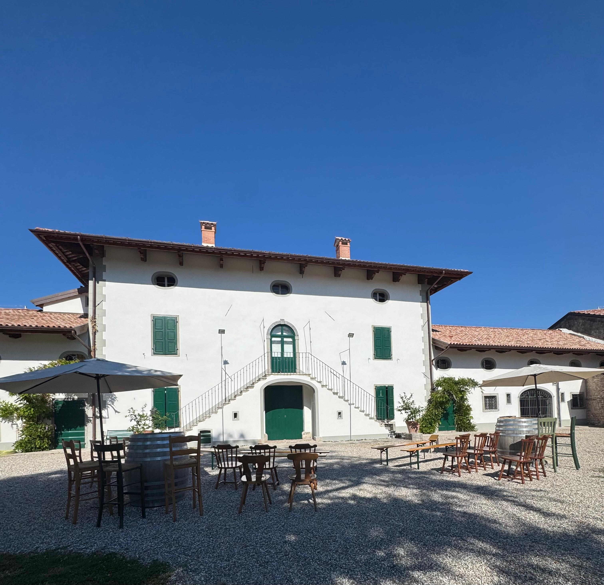

Friuli DOC Grave · Cuccana di Bicinicco · Est. 1976 Friuli DOC Grave · Cuccana di Bicinicco · Dal 1976
Terre Rosse
Wines
Authentic Italian Wines from the Heart of Friuli Vini Italiani Autentici dal Cuore del Friuli
Azienda Agricola
Terre Rosse
L'Azienda Agricola Terre Rosse affonda le proprie radici agricole in un lontano passato nella regione Friuli Venezia Giulia. Da vent'anni specializzata nella produzione di vino in Bicinicco, località situata nella Zona DOC Friuli Grave.
I membri della famiglia Lestani, fondatori dell'Azienda, si prendono cura delle viti con dedizione e passione per realizzare un vino di qualità; questo è ottenuto grazie ad un attento diradamento e selezione dei grappoli, nonché a tecniche agronomiche finalizzate alla conservazione e all'integrità dei vigneti.
La qualità dei prodotti di Terre Rosse è stata riconosciuta dalle principali guide di vini nazionali — Veronelli, Bibenda, Vitae — e l'ottimo rapporto qualità prezzo le ha permesso di conquistare rapidamente fette di mercato sia in Italia che all'Estero.
Lo Staff di Terre Rosse è a Vostra completa disposizione per fornirvi qualsiasi ulteriore informazione.
Cordiali saluti,
Azienda Agricola Terre Rosse
Azienda Agricola
Terre Rosse
We are a winery in Friuli-Venezia Giulia — Italy that produces D.O.C wines, rooted in the agricultural traditions of this extraordinary region. For more than twenty years, specialised in wine production in Bicinicco, in the DOC Friuli Grave zone.
The Lestani family, founders of the estate, tend the vines with dedication and passion. Quality is achieved through careful cluster thinning and selection, as well as agricultural techniques aimed at safeguarding the integrity of the vineyards.
The quality of our products has been confirmed by Italy's leading national wine guides — Veronelli, Bibenda and Vitae — and our excellent value for money has enabled us to rapidly gain market shares both in Italy and abroad.
The Terre Rosse team is at your complete disposal to provide any further information.
With warm regards,
Azienda Agricola Terre Rosse

Our HeritageLa Nostra Storia
A Family Legacy
Rooted in Friuli
Un'Eredità Familiare
Radicata nel Friuli
L'Azienda Agricola Terre Rosse has deep agricultural roots in a distant past in the Friuli Venezia Giulia region. For more than twenty years, specialised in wine production in Bicinicco, located in the DOC Friuli Grave Zone — an extraordinary terroir of iron-rich red soils that give the estate its very name. L'Azienda Agricola Terre Rosse affonda le proprie radici agricole in un lontano passato nella regione Friuli Venezia Giulia. Da vent'anni specializzata nella produzione di vino in Bicinicco, nella Zona DOC Friuli Grave — un terroir straordinario di suoli rossi ricchi di ferro che danno all'azienda il suo stesso nome.
The Lestani family, founders of the estate, tend the vines with dedication and passion. The quality of Terre Rosse wines has been recognised by Italy's leading wine guides — Veronelli, Bibenda and Vitae — and their excellent value has enabled rapid growth in markets both in Italy and abroad. I membri della famiglia Lestani, fondatori dell'Azienda, si prendono cura delle viti con dedizione e passione. La qualità dei prodotti è stata riconosciuta dalle principali guide di vini nazionali — Veronelli, Bibenda e Vitae — e l'ottimo rapporto qualità-prezzo le ha permesso di conquistare mercati in Italia e all'Estero.
Our objective is to pursue quality through careful cluster thinning and selection, alongside agricultural techniques aimed at safeguarding the integrity of the vineyards. Every vine is cultivated with respect for the land, and every bottle is an expression of that commitment. Il nostro obiettivo è perseguire la qualità attraverso un attento diradamento e selezione dei grappoli, nonché tecniche agronomiche finalizzate alla conservazione e all'integrità dei vigneti. Ogni vite è coltivata con rispetto per la terra, e ogni bottiglia è espressione di questo impegno.
The CellarLa Cantina
Our WinesI Nostri Vini
Six expressions of white, six of red, plus an orange wine, a sparkling, and the extraordinary SOLEON passito — all from the unique terroir of Friuli Grave. Sei bianchi, sei rossi, più un vino arancio, uno spumante e lo straordinario passito SOLEON — tutti dall'unico terroir del Friuli Grave.
From Our EstateDalla Nostra Azienda
Featured WinesVini in Evidenza
A curated selection from our full catalog — each a testament to the extraordinary terroir of Friuli. Una selezione dalla nostra gamma completa — ognuno espressione dell'eccezionale terroir friulano.
Friulano
Hay, pear, fresh white flowers. A fresh and enveloping palate finishing with a delicious almond note — the soul of Friuli. Fieno, pera, fiori bianchi freschi. Fresco e avvolgente al palato con una deliziosa chiusura di mandorla — l'anima del Friuli.
Learn MoreScopriMerlot
Cherry and raspberry with undertones of coffee. Soft tannins, aromatic and fruity with good alcohol and freshness. Ciliegia e lampone con sottofondo di caffè. Tannini morbidi, aromatico e fruttato con buona alcolicità e freschezza.
Learn MoreScopriMea Culpa
Cherry, blueberry and blackberry wrapped in elegant vanilla. Long aromatic complexity, round tannins, infinite persistence. Ciliegia, mirtillo e mora avvolti in elegante vaniglia. Lunghissima complessità aromatica, tannini rotondi, persistenza infinita.
Learn MoreScopriRibolla Gialla Brut
Fine persistent perlage. Fragrant yeast evolves to floral nuances and white peach. Velvety bubbles, clean and lively. Perlage fine e persistente. Lievito fragrante evolve verso sfumature floreali e pesca bianca. Bollicine vellutate, pulite e vivaci.
Learn MoreScopriVia XXV Aprile, 24 · Cuccana di Bicinicco Via XXV Aprile, 24 · Cuccana di Bicinicco
Experience
Terre Rosse
Vivi
Terre Rosse
Visit our estate in Cuccana di Bicinicco and walk among vines that have defined this land for generations. Explore our cellar, discover the art of winemaking, and savour our wines. We are open Monday–Friday 8:30–13:00, Thursday and Friday also 16:00–19:00. Visita la nostra azienda a Cuccana di Bicinicco e cammina tra vigneti che definiscono questa terra da generazioni. Esplora la cantina, scopri l'arte della vinificazione e assapora i nostri vini. Aperti lunedì–venerdì 8:30–13:00, giovedì e venerdì anche 16:00–19:00.
Plan Your VisitPrenota una VisitaGet in TouchContattaci
Discover Terre Rosse Wines Scopri i Vini Terre Rosse
Whether you are a wine enthusiast, sommelier, or restaurateur — we would love to hear from you. Contact us for tastings, orders, or to arrange a visit to the estate. Che siate appassionati, sommelier o ristoratori — saremo felici di sentirvi. Contattateci per degustazioni, ordini o per organizzare una visita all'azienda.